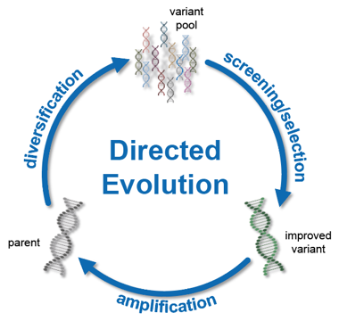

Evolutionary Karma
chimp
Be the basis for other startups
Thanks
Brendan Tschuy
Ian Winter
Also thank Technology Association of Oregon
Inclusive Localism
A New Foundation
Crowdfunded Directed Evolution forms something like a community-driven delocalized Y Combinator
Global Horizontal Scalability (many communities developing and collaborating)
Developing resiliance through small-world type networks opposed to 2big2fail type crisis
Crowdfunded Directed Evolution

- BeyondCorp Security Model
- Evolutionary Architecture
- Regulated Crowdfunds
BeyondCorp
Zero-Trust Security Framework modeled by Google
allows for the creation of a new type of cloud-native corporations – decentralized with centralized attributes
Evolutionary Architecture
Regulated Crowdfunds
- SEC's Response to ICOs
- Provides avenue to investment for all types of ventures
- Food truck looking for funding to scale business
- FinTech company looking to build smart contracts to fund hemp farmers on any blockchain
- Co-ops
- Potential platform for STO's
- Potential for global horizontal scalability
Karma Trust Protocol
A Solution for Decentralized Reputation Management with Bitcoin, GPG, and IPFS
Why Bitcoin
Data Anchoring
- OPReturn
- Proof-of-Work
- Lower-attack vector
- Mature community
Why IPFS
- Great Community
- Great Design (Content-addresses fit in Bitcoin OPReturn)
- Really Cool Tech with Ambitious Goals
Quick IPFS Tutorial
Install and Init IPFS & run daemon
ipfs daemon &
Add file
echo "hello world" > hello ipfs add hello
added QmT78zSuBmuS4z925WZfrqQ1qHaJ56DQaTfyMUF7F8ff5o hello
Get back file – works on any computer in the world
ipfs cat QmT78zSuBmuS4z925WZfrqQ1qHaJ56DQaTfyMUF7F8ff5o
hello world
Add Directories
ipfs add -r .
added QmS4pAajGo9cioE5ufb4fw6W4q5imvrGkeUh99V599Hbai wuji
list directory content (globally available)
ipfs ls QmS4pAajGo9cioE5ufb4fw6W4q5imvrGkeUh99V599Hbai
Qme8P2Qo3sDk9cP6vP5tDCrqiLmbP7Dn6qNsfuDotcKvVY - Crowdfunded_Directed_Evolution QmYFQ7yTikVEtApGD3SgzRyAnKS6JQTQJ5aSvREMpcu1Qw - Karma/ QmbFMke1KXqnYyBBWxB74N4c5SBnJMVAiMNRcGu6x1AwQH - TODOs.org QmT78zSuBmuS4z925WZfrqQ1qHaJ56DQaTfyMUF7F8ff5o 12 hello QmQ7wnYkJCDuDT1XCYSXa4qccXwvhUAaMBuMZbGJyVTvR2 - reveal.js/ QmbgmDwYXTQskUbHNeuWJG9BkJdUip9xURUm66zdF2REH8 7203 slides.html QmYiwxfBDhpd57JnuojHQPtqckDDDGtNTAhfPNi9S6VsZN 3262 slides.org
Creating Karma
Two Types of Trust
- Mathematical: proof
- Human: time
Creating Karma
Karma uses both
- Cryptographic digital signatures + Web-of-Trust
- Time through blockchain anchoring
Creating Karma
ipfs cat QmT78zSuBmuS4z925WZfrqQ1qHaJ56DQaTfyMUF7F8ff5o
hello world
gpg --output hello.sig --detach-sig QmT78zSuBmuS4z925WZfrqQ1qHaJ56DQaTfyMUF7F8ff5o ipfs add (hello.sig QmT78zSuBmuS4z925WZfrqQ1qHaJ56DQaTfyMUF7F8ff5o)
Creating Karma
gpg --output hello.sig --detach-sig sign hello mkdir helloDir; mv hello.sig hello helloDir ipfs add -r helloDir
added QmT78zSuBmuS4z925WZfrqQ1qHaJ56DQaTfyMUF7F8ff5o helloDir/hello added QmQYdf2e1RZgz1Nq5WaR6mTAbCxRmEbwdHzG8HaW9tZNeP helloDir/hello.sig added QmWzGnxLDRYzvkTLRrZKJ5zWN4NhJDCww5hiD3LG9UUedY helloDir
Creating Karma
ipfs get QmWzGnxLDRYzvkTLRrZKJ5zWN4NhJDCww5hiD3LG9UUedY
cd QmWzGnxLDRYzvkTLRrZKJ5zWN4NhJDCww5hiD3LG9UUedY
gpg --verify QmQYdf2e1RZgz1Nq5WaR6mTAbCxRmEbwdHzG8HaW9tZNeP QmT78zSuBmuS4z925WZfrqQ1qHaJ56DQaTfyMUF7F8ff5o
gpg: using RSA key DF18B2B9CFA212A16DFFB8B5DBDF5788899788A6 gpg: issuer "arjunvelagapudi@protonmail.com" gpg: Good signature from "Arjun Velagapudi <arjunvelagapudi@protonmail.com>" [ultimate]
Creating Karma
git clone https://github.com/coinspark/python-OP_RETURN cd python-OP_RETURN python send-OP_RETURN.py 149wHUMa41Xm2jnZtqgRx94uGbZD9kPXnS 0.001 QmWzGnxLDRYzvkTLRrZKJ5zWN4NhJDCww5hiD3LG9UUedY
- Output is a transaction ID
- Don't have bitcoind set up – don't have the fileSpace at the moment (130G+) and 30 days for verification
Karma
- The blockchain provides a timestamp
- The digital signature (+web-of-trust) provides identity verification
Karma
Over time – Trust is Created
Depends on the quality of data stored and linking to previous data
Where to Go From Here
Foundational tool:
- decentralized yelp / google reviews / etc
- new types of credit networks
- Foundations for permissioned ledger on IPFS
- Combine with cosmos.network and dependent types for a new type of dapp
- Enterprise utility in verification
Research:
- Dependent Types to improve mathematical trust
- Purely Functional Data Structures – maps well to IPFS structure